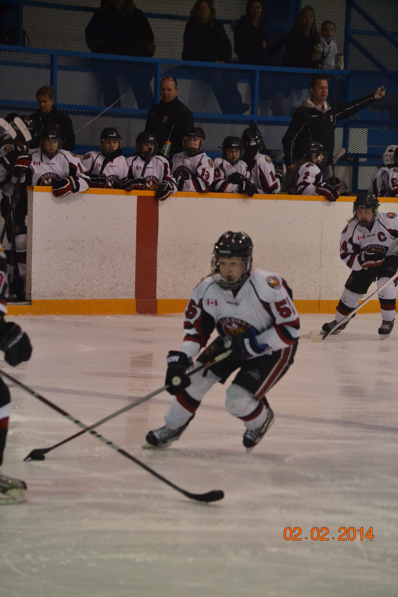
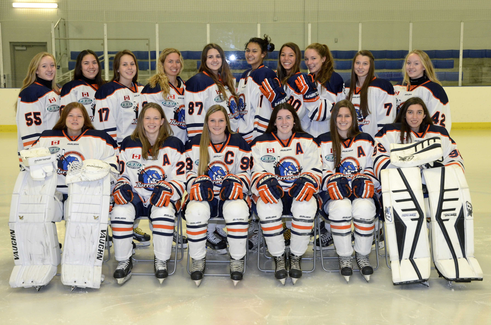
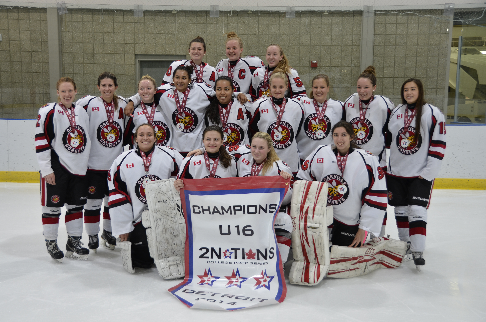

About Sydney
Background, player profile and the path that shaped her approach to hockey.
Read the story →A personal archive of Sydney's hockey story, teams, memories, video clips and academic ambitions.

Hockey has been about hard work, learning to compete, and the friendships made along the way. Browse the original profile and memories below.
Background, player profile and the path that shaped her approach to hockey.
Read the story →
Meet the Burlington Barracudas team and coaching staff featured in the original site.
Explore the team →
This site preserves material originally published in 2015. Team details, schedules, school information and player statistics are historical and should not be treated as current.